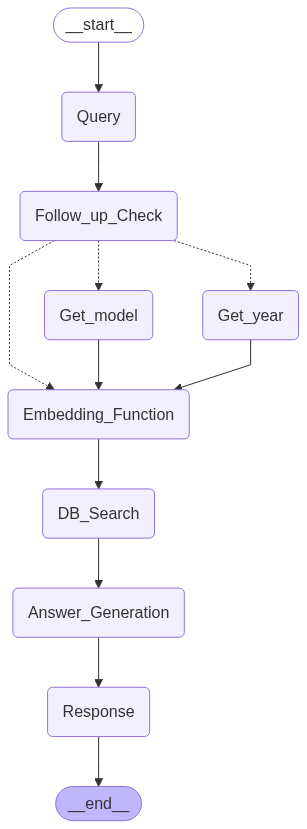

How It Works
The assistant follows a structured, multi-step pipeline from the moment a user submits a query to the moment
a response is delivered back to the frontend. Each step is handled by a dedicated node in the LangGraph agent graph.

Step 1: User Submits a Query
The pipeline begins when a user types a question into the Toyota web application's support interface.
This query is passed into the LangGraph agent as the initial input to the graph.
Step 2: Follow-Up Question Check
Before retrieving any information, the LangGraph agent evaluates whether the query contains enough context
to generate a useful answer.
Example — No follow-up needed:
"Does my 2008 Sienna have wireless CarPlay?"
This query includes both the model year (2008) and the vehicle model (Sienna), so the agent has all the
information it needs to proceed directly to retrieval.
Example — Follow-up required:
"Does my car have wireless CarPlay?"
This query is missing the vehicle model and year. The agent detects the ambiguity and asks the user: "What is the
model of your vehicle?" before continuing. This back-and-forth continues until all necessary context
has been collected.
Once all required information is in hand, the agent proceeds to the next step.
Step 3: Query Embedding
With a fully-resolved query, the agent passes the question into an embeddings model — included
in the project repository. This model converts the natural language query into a high-dimensional numeric
vector (an embedding) that captures the semantic meaning of the question.
This vector representation is what allows the system to search for meaning, not just matching keywords.
Two questions that are worded differently but mean the same thing will produce similar vectors, enabling
accurate retrieval even when phrasing varies.
Step 4: MongoDB Atlas Vector Search
The query vector is sent to MongoDB Atlas Vector Search, which searches the Toyota support knowledge
base for the most semantically similar documents. This database contains answers to a wide range of vehicle
support questions — all pre-processed and stored as vector embeddings at indexing time.
The search returns the most relevant document(s) from the knowledge base, representing the best-matched
answer to the user's query.
Step 5: Answer Generation (GPT-4o mini)
The original user query and the retrieved document(s) from the vector search are passed together into
OpenAI's GPT-4o mini model as a prompt. GPT-4o mini acts as the answer generation layer. It takes the
raw retrieved content and synthesizes it into a clear, natural-language response tailored to what the user asked.
This specific model was chosen for its balance of strong language understanding capabilities and cost-effectiveness, making it ideal for real-time applications like this one.
This step is what distinguishes a RAG system from a plain database lookup: rather than returning a raw document,
the LLM understands the context and formats the answer in a way that directly addresses the user's question.
Step 6: Response Delivered to the User
The generated response is returned through the pipeline and displayed on the Toyota web application's
frontend, completing the interaction. The entire process happens in real time.
From query submission to response delivery, the system is designed to operate with minimal latency,
providing users with quick and accurate answers to their support questions.